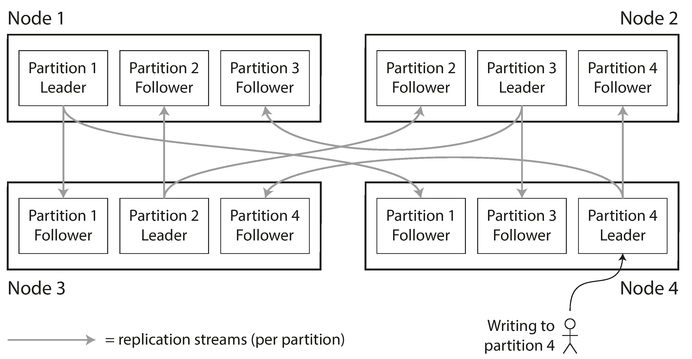
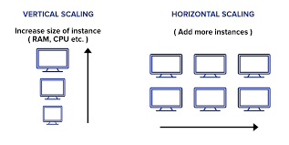
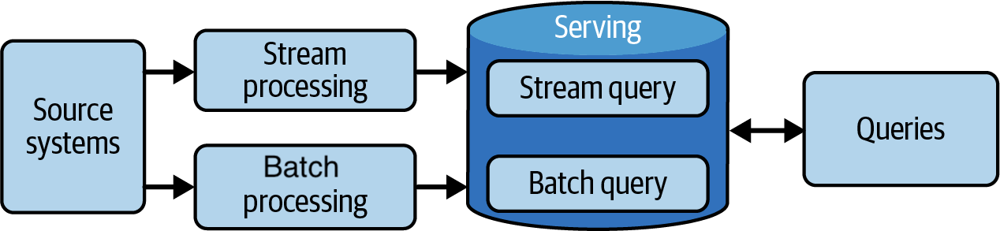
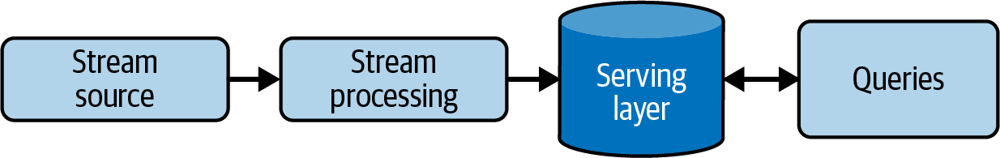
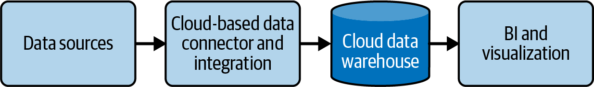

NTU (SCTP) Advanced Professional Certificate — Data Engineering
Data Architecture
The blueprint behind every data platform: where data lives, how it scales, and why "nobody trusts the numbers" is usually a design problem, not a bug.
Scroll to begin ↓
The Scenario
FreshCart needs a data platform
Your manager asks you to sketch out what FreshCart's future data platform should look like. FreshCart has structured order records, unstructured product images, and semi-structured delivery logs — and different teams already disagree on basic definitions like "active customer."
Why this matters
Data architecture is the blueprint. Getting it wrong means expensive rework later. A junior data engineer won't design the architecture alone, but you will be asked to implement parts of it — and "data warehouse vs data lake" or "Lambda vs Kappa" are interview staples.
Concept 1
Warehouse, Lake, or Lakehouse?
These are the three dominant ways to store analytical data at scale. Each makes a different trade-off between structure, cost, and flexibility.
Structured onlySchema-on-write
What it is: A store optimised for structured, cleaned data — think rows and columns, ready for SQL and BI dashboards. Data is transformed before it's loaded (schema-on-write).
Good for: FreshCart's structured order data — order ID, customer ID, timestamp, amount — fits neatly into tables. Finance and BI teams query it directly.
Trade-off: Rigid schema. Adding a new, messy data source (like product images) usually doesn't fit.
Any formatSchema-on-read
What it is: A low-cost store that keeps data in its raw, native format — structured, semi-structured, or unstructured. Structure is applied only when the data is read (schema-on-read).
Good for: FreshCart's product images and semi-structured delivery logs (JSON) — dump them in cheaply, decide how to interpret them later.
Trade-off: Without governance, a data lake becomes a "data swamp" — lots of files, no one sure what's trustworthy.
Best of bothModern default
What it is: Lake-style low-cost storage for any file type, with warehouse-style structure, transactions, and query performance layered on top (e.g. Delta Lake, Apache Iceberg).
Good for: FreshCart storing everything — orders, images, logs — in one place, with BI tools still able to query the structured parts reliably.
Trade-off: Newer tooling, more moving parts to operate than a plain warehouse.
Check yourself
Click each FreshCart data source, then click the store you think fits best.
Data Warehousestructured, ready for SQL
Data Lakeraw, any format, cheap
Data Lakehousestructure + flexibility
Select an item above, then a target below.
Concept 2
Data Architecture Principles
Principles guide decisions about a data platform, the way a building code guides construction. Two are especially relevant to FreshCart's "nobody trusts the numbers" problem — which is a governance problem, not a technology one.
Common Vocabulary
Every team must agree on what terms mean. If marketing's "active customer" differs from product's, no amount of infrastructure fixes the mismatch — the definitions need to be aligned first.
Data as a Shared Asset
Data belongs to the organisation, not to the team that created it. Systems should be designed so data is discoverable and reusable across teams, not siloed.
Interview tip
When someone says "our data platform is broken," ask whether it's a technology problem or a governance problem first. Many "fix the pipeline" requests are actually "align the definitions" requests.
Concept 3
Scaling Distributed Systems
Every cloud database you will ever use leans on two mechanisms to handle more data and more traffic than a single machine can.
Replication
Copy the same data onto multiple servers. If one server dies, another already has a copy. Gives fault tolerance and lets reads be spread across copies.
Partitioning
Split a large dataset into smaller chunks ("shards") spread across servers. No single machine holds all the data. Gives throughput — the workload is divided up.

Vertical vs Horizontal Scaling
Vertical scaling means adding more power (CPU, RAM, disk) to a single existing server. Simple, but has a hard ceiling — there's a biggest machine money can buy — and that machine is a single point of failure.

Concept 4
The CAP Theorem
In a distributed system, a network Partition (a broken link between servers) will eventually happen. When it does, the CAP theorem says you must choose: stay Consistent (every read gets the latest write, but some nodes may refuse to answer) or stay Available (every node answers, but some might return stale data). You can't fully guarantee both during a partition.
Click two of the three to see what kind of system that combination describes.
C
Consistency
A
Availability
P
Partition Tolerance
Pick two properties above — since network partitions are unavoidable in practice, every real distributed system keeps P, then picks between C and A.
BASE — the practical alternative
Most NoSQL databases (including Redis clusters) favour BASE over strict consistency: Basically Available, Soft state, Eventually consistent. The system stays responsive and converges to the correct value over time, rather than blocking until every replica agrees.
Concept 5
Lambda vs Kappa Architecture
Two blueprints for combining historical and real-time data processing in one platform.

Runs two parallel pipelines: a batch layer that recomputes accurate views over all historical data, and a speed layer that gives fast, approximate real-time views. Both feed a serving layer that merges results.
Trade-off: Powerful, but you maintain two separate codebases doing similar logic — batch and streaming.

Uses one pipeline only: everything is treated as a stream. Historical reprocessing is done by replaying the stream from the beginning, not by maintaining a separate batch system.
Trade-off: Simpler to maintain (one codebase), but requires a stream platform (e.g. Kafka) that can retain and replay history efficiently.
Concept 6
The Modern Data Stack
In practice, FreshCart won't build one monolithic system — it will assemble a stack of specialised, cloud-managed tools: ingestion, storage, transformation, orchestration, and BI, each swappable.

Hands-on Tools
NoSQL & Object Storage
The lesson's hands-on covers two non-relational (NoSQL) stores that sit outside the warehouse/lake world above.
Redis — in-memory key-value store
Redis keeps data as key-value pairs entirely in RAM, so most operations run in O(1) — the same complexity as a Python dictionary lookup. That speed makes it the default choice for caching, sessions, and real-time counters, not for long-term storage of everything.
Click a data structure to see how real products use it.
String›
GitHub counts repository stars/forks with a String.
Stripe uses a String with an expiry for API rate limiting.
Hash›
Discord caches user profile info in a Hash.
Amazon-style e-commerce caches product details and inventory in a Hash.
List›
Discord stores chat history in a List.
GitHub uses a List as an event message queue.
Sorted Set (ZSet)›
League of Legends builds real-time leaderboards with a ZSet — scores update and top players query instantly.
E-commerce ranks product recommendations by user behaviour with a ZSet.
Google Cloud Storage — object storage
GCS stores data as objects (files) inside flat containers called buckets — no folders or schema, just a key and a blob of bytes plus metadata. It's built for large, unstructured files: images, videos, backups, raw datasets feeding a data lake.
Redis
Google Cloud Storage
In-memory, extremely fast
Disk-backed, optimised for durability over speed
Small structured values (strings, hashes, lists...)
Large unstructured blobs (images, videos, files)
Caching, sessions, real-time counters
Data lake storage, backups, static assets
Recap
Key Takeaways
Warehouse = structured, schema-on-write. Lake = any format, schema-on-read. Lakehouse = both.
Replication → fault tolerance. Partitioning → throughput. Most systems use both.
"Nobody trusts the numbers" is usually a Common Vocabulary / governance problem, not a technology problem.
CAP theorem: partitions are unavoidable, so you trade off Consistency vs Availability. Most NoSQL stores choose BASE.
Lambda = two pipelines (batch + speed). Kappa = one pipeline (stream, replayable).
Redis = fast in-memory key-value store for small, hot data. GCS = durable object storage for large, unstructured files.